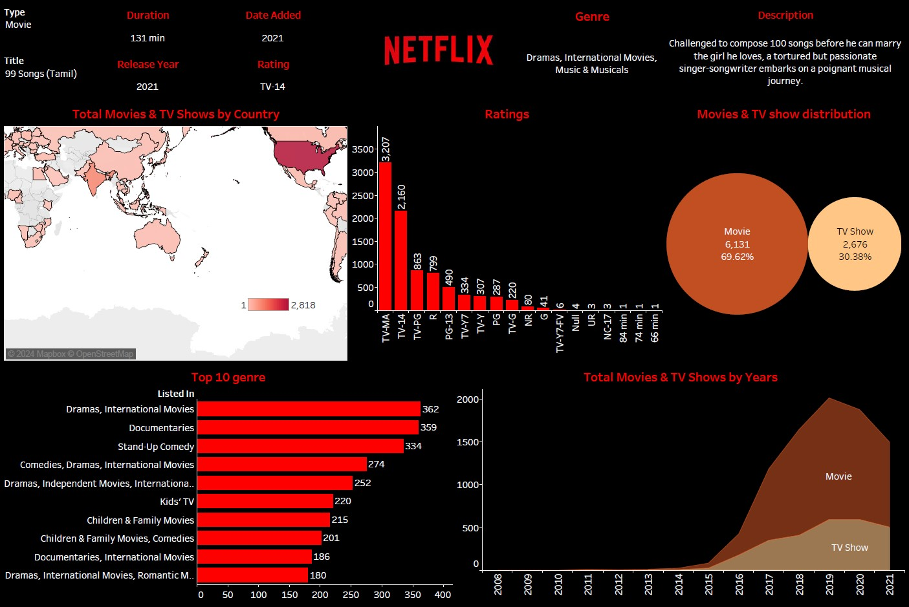

Go Back
The Netflix Tableau Dashboard project is centered on data loading, transformation, and visualization using MS Excel, SQL, and the Tableau dashboard.
Reference Links:
https://www.kaggle.com/datasets/shivamb/netflix-shows
Data Extracted:
2021
Problem Statement:
The project aims to leverage Tableau to analyze Netflix-related data sourced from Kaggle, addressing the need for a comprehensive understanding of trends and patterns within the platform. By employing various analytical steps, the project seeks to extract actionable insights that can inform content strategy, user engagement, and market positioning for Netflix, ultimately enhancing decision-making in the streaming industry.
Utilized functionality in Tableau:
1) Data Connection
2) Interactive Dashboards
3) Advanced Calculations
4) Filters and Parameters
5) Action in the Dashboard
Here are some key insights:
1) Total Movies and TV Shows by Years: This dashboard illustrates the growth of Netflix's library over the years, showcasing the increase in both movies and TV shows. Analyzing this data can help identify trends in content strategy and inform future programming decisions.
2) Top 10 Genres Shown by Netflix: This dashboard highlights the most frequently displayed genres on Netflix, reflecting viewer preferences and trends. Understanding these genre trends can assist in tailoring content acquisition and marketing strategies to better meet audience demands.
3) Top Rated Movie: This dashboard showcases the highest-rated movie available on Netflix, indicating which content has garnered the most positive audience feedback. Promoting top-rated films can attract new subscribers and enhance viewer satisfaction.
Click here to see >> GitHub
